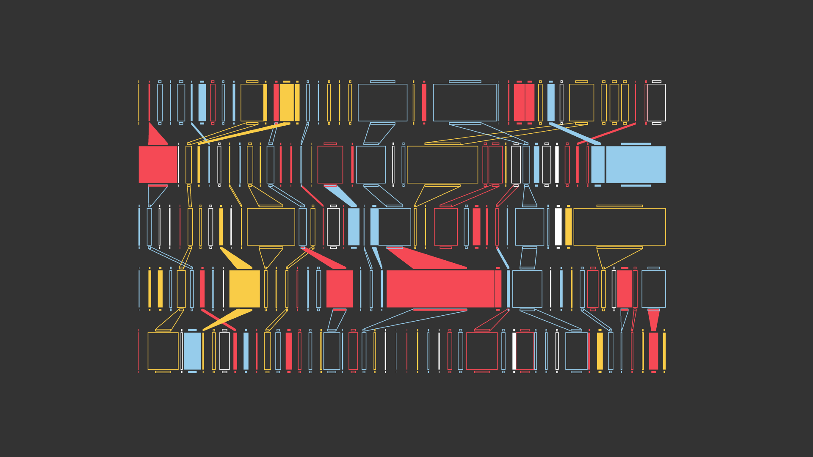
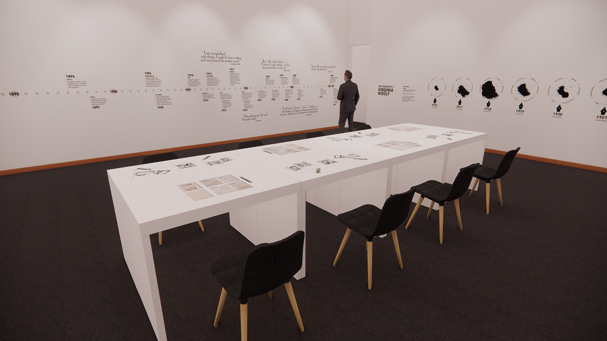
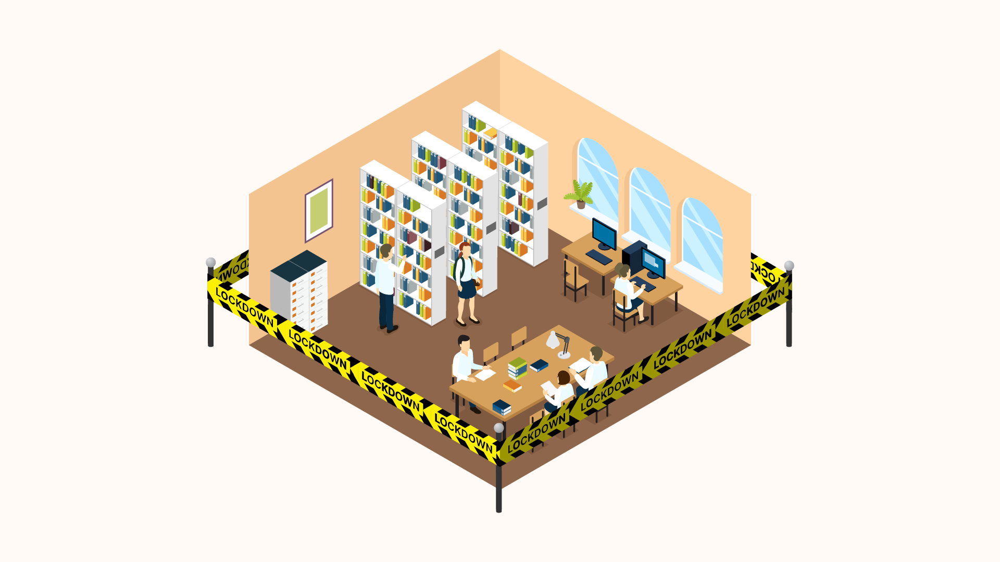
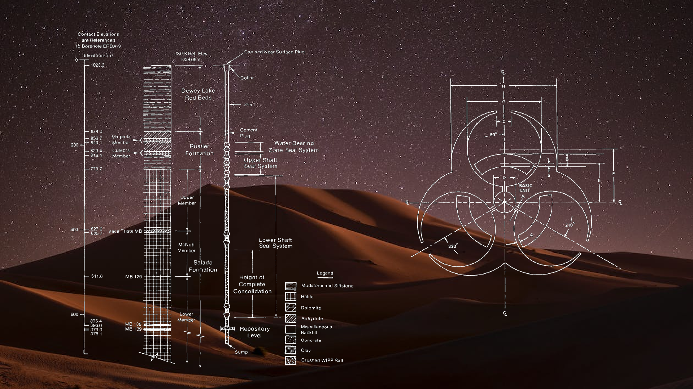

Portfolio
-
The Digital Decay Dendrogram
-

Bits and Bytes Don't Leave Bones
-
 Nightingale Issue 5: Nature
Nightingale Issue 5: Nature -
 When the Data is Gone
When the Data is Gone -
 Trails of Tails
Trails of Tails -

In Her Own Words
-
 Um, Actually... the Trading Card Game
Um, Actually... the Trading Card Game -
 The Women Who Mapped the Sky
The Women Who Mapped the Sky -
 Fabletop
Fabletop -

Hachette v. Internet Archive
-

The Challenge of Designing Nuclear Warning Markers
-
 Mosaic Coaching
Mosaic Coaching -
 The Visual Evolution of the Tommy Westphall Universe
The Visual Evolution of the Tommy Westphall Universe -
Designing for Neurodivergent Audiences
-
 Restorative Justice Initiative
Restorative Justice Initiative -
 Called to Serve CDC
Called to Serve CDC -
 Novah
Novah -
 All Faiths Vaccination Campaign
All Faiths Vaccination Campaign -
Science History Institute
-
 Philadelphia City Council
Philadelphia City Council -
 C.A.S.E. the Vote
C.A.S.E. the Vote -
 F.R.E.D. App
F.R.E.D. App -
 Nonprofit.Courses
Nonprofit.Courses -
 Flybar
Flybar -
 NCC Pocono Student Life
NCC Pocono Student Life -
Jersey Surf
-
 NCC 50th Anniversary Magazine
NCC 50th Anniversary Magazine -
 Micro Marching League
Micro Marching League
Don't just take my word for it.
Sometimes people say nice things about me.